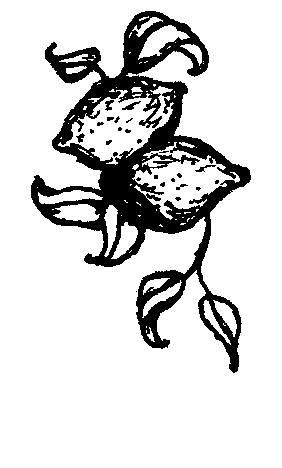

Spinach Salad
with Preserved
Lemon & Olives
- 2
- 3
- 3
- ½
- ½
- 1
- pounds fresh spinach
- garlic cloves, chopped
- tablespoons extra virgin
olive oil
- preserved lemon peel, chopped
- cup violet olives, pitted
and chopped
- pinch salt and black pepper
- 1 Wash the spinach and remove the stems only if too thick or hard.
- 2 Put the leaves in a large pan covered, and set over low heat until the leaves crumble into a soft mass. They will steam in the water that clings to them in one to two minutes. Drain well.
- 3 Heat the garlic in one tablespoon of oil in a large pan until the aroma rises.
- 4 Add the chopped preserved lemon peel, chopped olives, and cooked spinach. Season with salt and pepper. Mix well and cook over high heat for a minute or two.
- 5 Stir in the remaining oil, garnish with the reserved olives and serve cold.
Homework
Seared Tuna